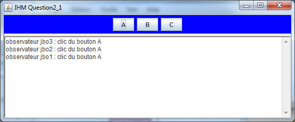

![[Image]](question1.jpg) Pattern
Observateur/Observé
Pattern
Observateur/Observé TP2
| Thème
lecture préalable du Pattern Observateur (note 10), du Modèle MVC et du modèle événementiel |
Pattern
Observateur/Observé
Soit le Pattern Observateur en notation UML selon LA référence : Erich Gamma, Richard Helm, Ralph Johnson and John Vlissides Design Patterns Elements of Reusable Object-Oriented Software Addison-Wesley, 1995. En Java, le paquetage java.util implemente ce Pattern et propose la classe Observable pour Subject et l'interface Observer (lire leur javadoc).
Les participants
- L'observé : la Classe Subject ou java.util.Observable
- L'observateur ici l'interface Observer ou java.util.Observer
- L'observé concret : la Classe ConcreteSubject
- L'observateur concret :la classe ConcreteObserver utilise une référence du sujet concret qu'il observe et réagit à chaque mise à jour
Pour cette question, nous souhaitons développer une classe de tests afin de "vérifier" le bon fonctionnement de ce Pattern,
Quelques exemples de "validation", d'assertions
Vérifier que lors d'une notification, TOUS les observateurs ont bien été informés,
Vérifier que les arguments ont bien été transmis,
Vérifier que le notifiant est le bon ... etc ...
Un exemple de test avec BlueJ: vérification qu'un observateur est bien notifié avec le paramètre bien reçu :
prémisses et classes retenues:
la classe ConcreteSubject gère une liste de noms, chaque modification de cette liste engendre une notification.
la classe ConcreteObserver se contente, à chaque notification, d'afficher cette liste et de mémoriser l'origine des notifications et les paramètres transmis.
La mémorisation du notifiant et du paramètre transmis utilise deux piles(java.util.Stack<T>), senders et arguments, accessibles de l'"extérieur"senders : mémorise les émetteurs des notifications
arguments : mémorise les arguments transmis lors d'une notification
ConcreteSubject list = new ConcreteSubject(); // création d'une liste ConcreteObserver observer = new ConcreteObserver(); // création d'un observateur list.addObserver(observer); // ajout de cet observateur à la liste list.insert("il fait beau, ce matin"); // modification de cette liste, l'observateur doit être notifié// "vérification" : assertFalse(observer.senders().empty()); // la pile senders ne doit pas être vide, assertEquals( list,observer.senders().pop() ); // est-ce le bon émetteur ? assertEquals( "il fait beau, ce matin", observer.arguments().pop() ); // le paramètre reçu est-il correct ?Combien d'AssertEquals devrez-vous écrire dans cet exercice ?
Complétez les 3 méthodes de test de la classe "PatternObservateur" et n'oubliez pas de supprimer les fail(); !
AIDE :
- Attention ! Au bout d'une heure maximum, il vaut mieux passer à la question 2.
- Compléter test1() en dépilant toutes les piles jusqu'à ce qu'elles soient vides, et en vérifiant à chaque fois que l'élément retourné est bien celui attendu. Ne pas chercher à faire des boucles !
- Idem pour test2()
- Pour test3(), utiliser les 3 méthodes count..., delete..., et delete...s, et vérifier que count... retourne à chaque étape le nombre attendu.
- Soumettre cette question à JNews après avoir commenté le System.out.println dans ConcreteObserver.update().
![[Image]](question2.jpg) Introduction aux
événements de l'AWT
Introduction aux
événements de l'AWT
(paquetage java.awt.event, événements engendrés par une instance de la classe javax.swing.JButton)
En java, la gestion des évènements utilise le pattern Observateur, seuls les noms des méthodes diffèrent, les notifications sont ici engendrées par un changement d'état de l'interface graphique : un clic sur un bouton, un déplacement de souris, etc...
... de la question 1 ... de la question 2 e s t r e m p l a c é e p a r la classe Observable java.awt.JButton l'interface Observer java.awt.event.ActionListener la méthode addObserver() java.awt.event.addActionListener() la méthode update() ActionListener.actionPerformed()
A chaque clic, un ou plusieurs observateurs sont réveillés
si l'applette ne se présente pas tp2>appletviewer index.html
A chaque clic, un ou plusieurs observateurs sont réveillés :
- le bouton A a 3 observateurs ( jbo1, jbo2 et jbo3)
- 
- le bouton B a 2 observateurs (jbo1 et jbo2)
- le bouton C a 1 observateur (jbo1)
.1)
Compléter les classes IHMQuestion2_1 et JButtonObserver afin d'obtenir les
mêmes copies écran
AIDE :
- getActionCommand() sur un ActionEvent retourne le nom du composant qui a provoqué cet évènement.
.2) Complétez la classe
JMouseObserver pour obtenir le comportement ci-dessous
si l'applette ne se présente pas tp2>appletviewer index.html
A chaque déplacement de la souris vers l'un des boutons, un observateur est réveillé :
- Le bouton A a 4 observateurs (jmo1) et (jbo1, jbo2 et jbo3), ici la souris est entrée sur le bouton A
- la souris est entrée et un clic a eu lieu sur le bouton A(cf. question2_1)
- Déplacement vers le bouton B avec un clic
- déplacement vers le bouton C avec un clic
Compléter les classes IHMQuestion2_2 et JMouseObserver afin d'obtenir les mêmes copies écran
cette fois
... de la question 1
... de la question 2.2
e s t r e m p l a c é e p a r
l'interface Observer
java.awt.event.MouseListener
la méthode addObserver()
java.awt.event.addMouseListener()
la méthode update()
MouseListener.mouseXxxxed()
implémentant la méthodes
de votre choix :
mouseEntered
AIDE :
- Le paramètre d'applette mouse doit valoir yes pour que les évènements souris soient traités.
- BlueJ permet de lancer les applettes dans appletviewer ou dans le navigateur, en ajoutant des paramètres ; donc, ne pas toucher à la variable testSouris.
![[Image]](question3.jpg) Le modèle MVC
Le modèle MVC
extraite de designing_enterprise_apps-2_0-book.pdf
Selon le "pattern MVC" (Modèle-Vue-Contrôleur)
.1) Développez une application de
type calculette à pile, selon le paradigme MVC
L'évaluation d'une expression arithmétique peut être réalisée par l'usage d'une pile d'entiers
Par exemple l'expression 3 + 2 engendre la séquence :
empiler(3);
empiler(2);
empiler(depiler()+depiler()) ;de même que l'expression 3 + 2 * 5 correspond à la séquence:
empiler(3);empiler(2);empiler(5); empiler(depiler()*depiler()); empiler(depiler()+depiler())Attention à l'ordre des valeurs pour la soustraction !
Ne pas changer la pile en cas de division par zéro.
L'architecture logicielle induite par l'usage du paradigme MVC nous donne
Une des implémentations des piles (issue du tp sur les piles) est installée
dans le package tp_pile. Proposer l'implémentation des classes PileModele<T> et Contrôleur
- Selon "MVC", la classe PileModele<T> hérite de la classe Observable et implémente PileI<T>; à chaque changement d'état (modification de la pile), les observateurs inscrits seront notifiés.
- La pile du tp_pile, sans modification, est utilisée; seules certaines méthodes seront redéfinies, enrichies, décorées ...
- La classe Controleur implémente les actions, évènements engendrés par l'utilisateur; à chaque opération souhaitée, le contrôleur altère les données du modèle de la pile; celle-ci, à chaque occurrence d'un changement d'état, prévient ses observateurs; la vue en est un.
AIDE :
- Il est conseillé de créer une classe interne (non anonyme) par bouton pour ne pas avoir une énorme méthode actionPerformed() et de créer une méthode actualiserIHM() qui enable/disable les bons boutons selon l'état de la pile.
- Il est également conseillé de soumettre à JNews le code java dès le 1er bouton, puis, une fois correct, de procéder par copier/coller/adapter.
Une AppletteCalculette au comportement souhaité
si l'applette ne se présente pas tp2>appletviewer index.html
Notez bien qu'un mauvais format de nombre ou une division par zéro ne doivent avoir aucune incidence sur la pile.
Soumettez cette question à JNEWS avant de poursuivre.
Ajouter cette nouvelle Vue au modèle,
vérifiez que seule la classe Applette est concernée par cet ajout, et que les modifications du source sont mineures.
public class Vue2 extends JPanel implements Observer { private JSlider jauge; private PileModele<Integer> pile; public Vue2( PileModele<Integer> pile ) { super(); this.pile = pile; this.jauge = new JSlider( JSlider.HORIZONTAL, 0, pile.capacite(), 0 ); this.jauge.setValue( 0 ); setLayout( new FlowLayout( FlowLayout.CENTER ) ); this.jauge.setEnabled( false ); add( this.jauge ); setBackground( Color.magenta ); pile.addObserver( this ); } public void update( Observable obs, Object arg ) { jauge.setValue( pile.taille() ); } }
Cette modification n'est pas à soumettre à JNEWS.